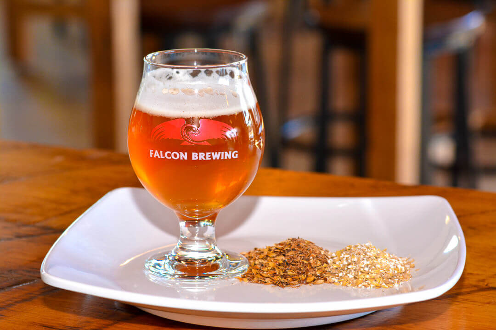
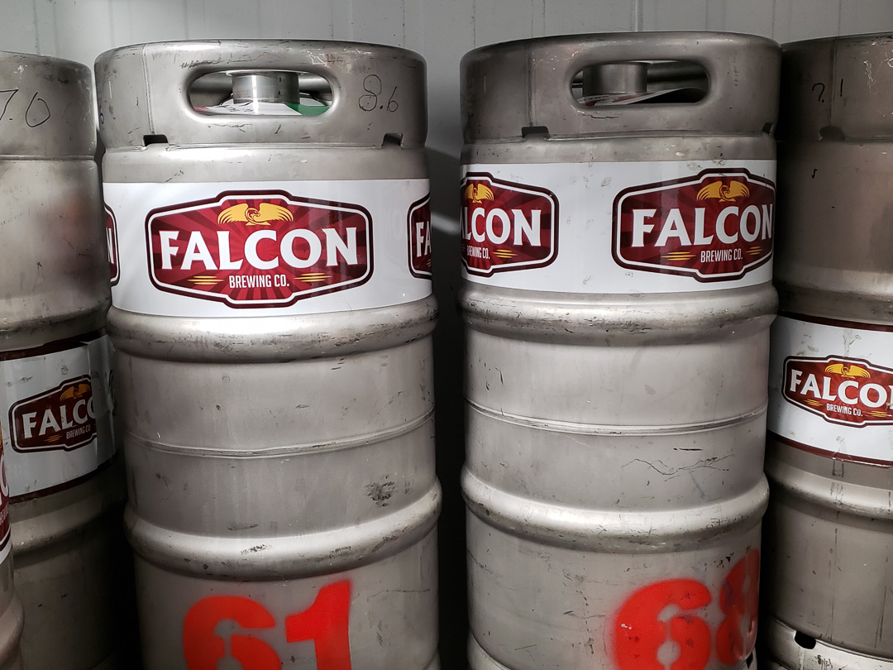

<div class="about-wrapper">
  
  <article>
    <h1>Our Story</h1>
    <section>
      <div class="content-group">
        
        <p class="main">
            The Falcon Brewing Company (FBC) was incorporated in December 2014 and began selling beer in the Ontario market in early 2015.<br><br>

            The beers were first brewed by the Wellington Brewing Company in Guelph, Ontario, in tallboy cans (473ml) for sale in Beer Stores, and in 30L and 58L kegs for draft sales to pubs and bars.  Falcon beers are currently available in over 40 pubs, bars and restaurants, as well as 180 retail stores.<br><br>
            
            FBC opened its own brewery in Ajax, ON in April 2017.  There are 20 different beers brewing at any given time, with ten available at all times on tap, or in bottles for take-out directly from the brewery. There are four permanent brands, and the rest are rotated to offer a changing selection for the customer.<br><br>
            
            Falcon canned beers are brewed by a contract brewer, currently Junction Brewery in Toronto. Falcon Ajax currently does not have the brewing capacity, or canning line, to fulfill the growing demand from the LCBO, Beer Stores and grocery stores for Red Falcon and Lager Falcon. Munition IPA and Salem Stout will begin being canned in early 2019, totalling four products in retail stores.
            
        </p>
        
        
        <p class="main mobile-margin-bottom">
            <span class="title">Port Hope (Future Location)</span><br><br>
            We are opening a sister brewery in Port Hope in the spring of 2020. We are looking forward to being a part of this small town and agricultural community, known for good food and developing a strong reputation as a destination for dining, shopping, theatre and numerous events.<br><br>  

            Our location at 33 Mill Street provides easy access to the many pedestrians that walk the downtown core. There will also be ample parking space on site as well. The view from our building will look back across the Ganaraska River to the parks and the historic buildings that make up downtown Port Hope.<br><br>  
            
            Port Hope has a rich history for us to draw from when naming various brews. When looking through the Port Hope Archives we found that in the 1800’s there were four breweries located here. <br><br>We would love any stories and pictures that would add to the character of Falcon Port Hope Brewery. 
            
        </p>
      </div>
    </section>
  </article>
  
<!-- Wrapper -->
</div>
